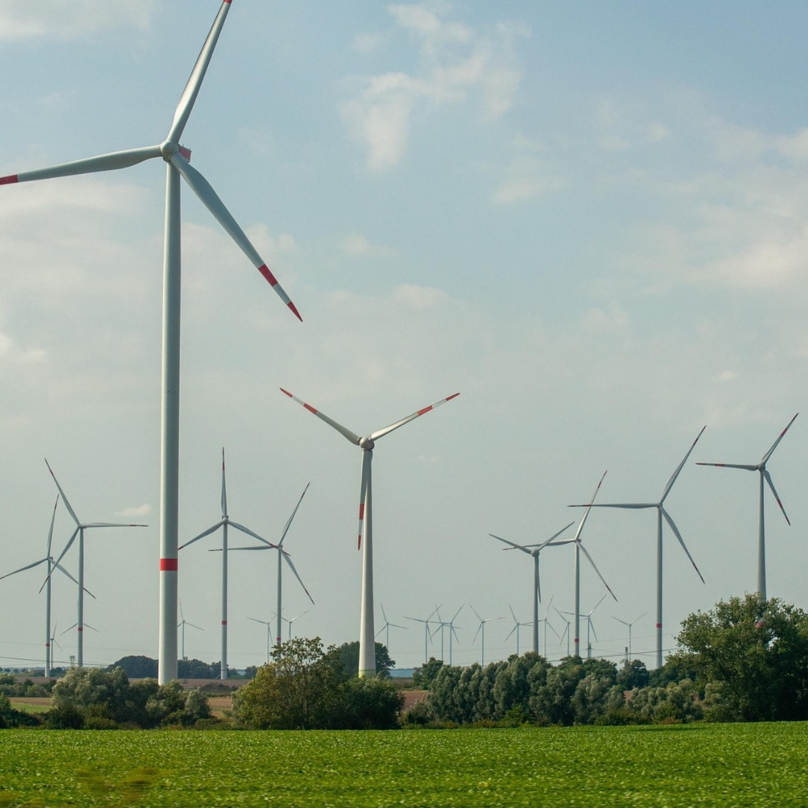

Energía Eolica

La energía eólica es una fuente de energía que se alimenta de la fuerza del viento. Los
sistemas
eólicos aprovechan la energía cinética del viento generado por efecto de las corrientes de aire para
transformarla en electricidad u otras formas útiles para las actividades humanas.
La energía eólica es importante porqué es energía renovable que representa una alternativa a los combustibles fósiles.
Los sistemas eólicos no emiten gases de efecto invernadero, por lo tanto, no contribuyen al cambio climático de la Tierra. Además, esta fuente de energía ofrece muchas otras ventajas: es abundante, renovable y limpia. Por este motivo, se considera un tipo de energía verde.
La instalación de aerogeneradores permite reducir la dependencia de las centrales térmicas de vapor que funcionan con combustibles fósiles o con uranio (centrales nucleares) que son fuentes de energía no renovable.
El origen de la energía eólica es el viento y el viento lo genera la radiación solar, el Sol.
La energía eólica depende de forma indirecta de la energía solar. Cuando el Sol calienta el aire
cambia de densidad. La diferencia de densidad entre diferentes masas de aire provoca un movimiento
ascendente y descendente de estas masas de aire. El aire más denso (frío) pesa más y tiende a bajar.
Cuando el aire sube, deja un espacio vacío que enseguida se rellena con otra masa de aire que tiene al lado generando un movimiento horizontal. Este movimiento se debe a la diferencia de presiones, es decir, cuando el aire sube y deja un espacio vacío genera una depresión.
La suma de estos movimientos verticales y horizontales generan las corrientes de aire, es decir, el viento. Estas corrientes de aire se pueden dar de forma local, pero a veces, más global. El origen del del viento es el calor que genera el Sol, pero el Sol solo puede calentar la mitad de la Tierra.
¿Qué es?
La energía eólica es importante porqué es energía renovable que representa una alternativa a los combustibles fósiles.
Los sistemas eólicos no emiten gases de efecto invernadero, por lo tanto, no contribuyen al cambio climático de la Tierra. Además, esta fuente de energía ofrece muchas otras ventajas: es abundante, renovable y limpia. Por este motivo, se considera un tipo de energía verde.
La instalación de aerogeneradores permite reducir la dependencia de las centrales térmicas de vapor que funcionan con combustibles fósiles o con uranio (centrales nucleares) que son fuentes de energía no renovable.
Origen de la energía eólica
Cuando el aire sube, deja un espacio vacío que enseguida se rellena con otra masa de aire que tiene al lado generando un movimiento horizontal. Este movimiento se debe a la diferencia de presiones, es decir, cuando el aire sube y deja un espacio vacío genera una depresión.
La suma de estos movimientos verticales y horizontales generan las corrientes de aire, es decir, el viento. Estas corrientes de aire se pueden dar de forma local, pero a veces, más global. El origen del del viento es el calor que genera el Sol, pero el Sol solo puede calentar la mitad de la Tierra.